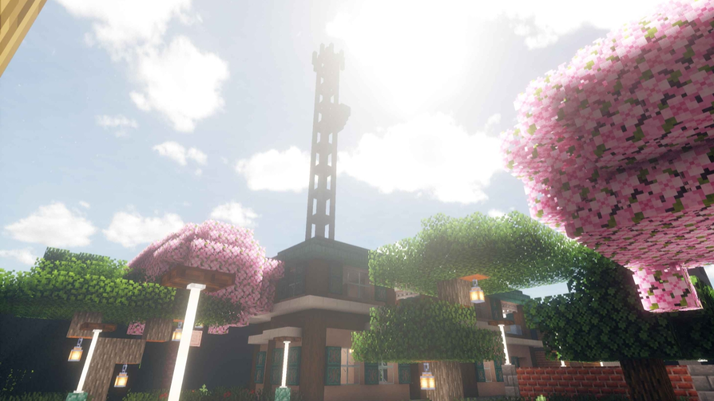

JOIN GRUP WHATSAPP
Klik tombol download di bawah untuk join grup WhatsApp
MAP UPDATE VERSI 30 SEPTEMBER 2025
KALAU MAU DOWNLOAD MAP NYA ADA DI BAWAH

Map tambak udang dan ikan (JAVA)
Klik tombol download di bawah untuk mengunduh map ini
Map by rullzNPC
Map tambak udang dan ikan (BEDROCK)
Klik tombol download di bawah untuk mengunduh map ini
Map by rullzNPC